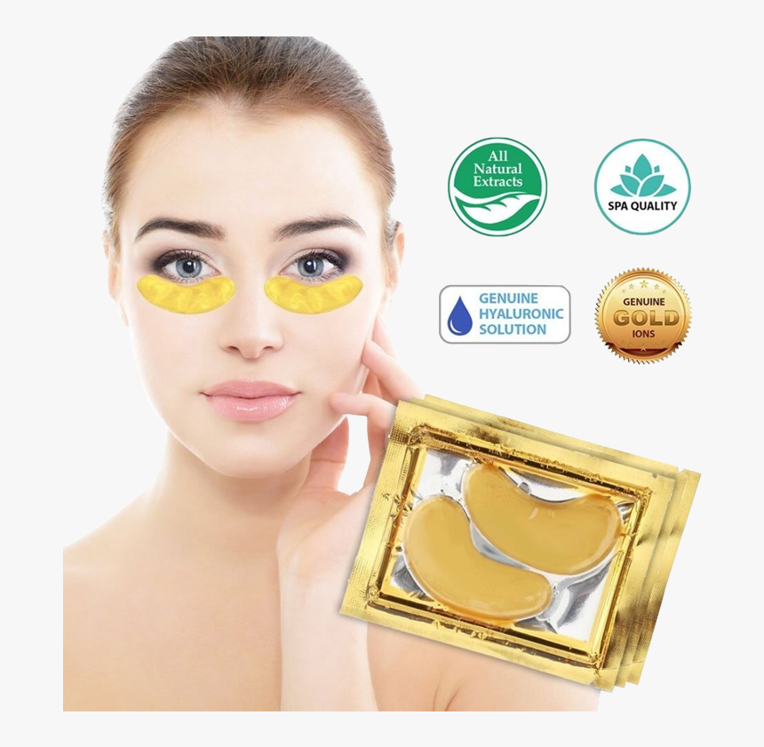

Hydrogel Under‑Eye Patches
Experience brighter, smoother under‑eye skin with our hydrogel patches. Each pair is infused with nourishing ingredients that help reduce puffiness and dark circles while delivering intense hydration. Perfect for self‑care, prepping before a big event, or whenever your eyes need a soothing boost.
Price: $25
* Replace the link above with your actual product checkout or ordering page.
Why You'll Love Them
- Intensely hydrates and soothes tired eyes
- Reduces puffiness and dark circles
- Made with gentle, eco‑friendly ingredients
How to Use
- Cleanse and dry your face.
- Apply one patch under each eye and relax for 10–15 minutes.
- Remove patches and gently pat the remaining serum into your skin.
What Our Customers Say
“These patches are a miracle! My puffiness is gone.” — Sarah M.
“I use them before every big event and love the results.” — Alex K.